06.28.2009 09:16
Louisville Locks
The USCG and ACOE have a project in
Louisville at the McAlpine
Locks. I believe there is an Acoustic Doppler Currant
Profiler - ADCP at the split coming into the locks.
Here is a vessel approaching the area coming through the several leading bridges:
A vessel that has made the approach and is entering the channel to the lock:
The ACOE has a airphoto of the lock in their McAlphone Locks and Dam fact sheet
Here is a vessel approaching the area coming through the several leading bridges:
A vessel that has made the approach and is entering the channel to the lock:
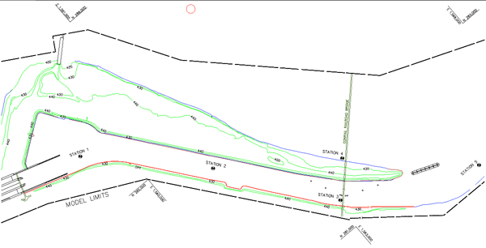
The ACOE has a airphoto of the lock in their McAlphone Locks and Dam fact sheet
06.27.2009 09:09
How and why do you configure your AIS?
The initial comments that I got an
LiveJournal are great. To step up the conversation some more, I
started a thread over on gCaptain. If you want more, on this, take
a look at the paper by Brian Calder and myself:
Traffic Analysis for the Calibration of Risk Assessment Methods, US
Hydro 2009
cCaptain thread: How do you configure your AIS and why?:
I'm a researcher at the Center for Coastal and Ocean Mapping/NOAA Joint Hydrographic Center in New Hampshire (research blog: ..). I've been working with AIS for a couple of years now... ways to get information to mariners and ways to understand how mariners move about. After looking at the settings people put into their devices and configuring a bunch of units myself, I've seen that there are a lot of different styles for what is done. It would be a huge help to know what your strategy is for setting the vessel type, draught, length, width, name, call sign, ship and cargo type, ETA, and destination fields. Many vessels set it once and leave it, while others change one or more of these all the time. I've looked at a few books that are used for teaching and haven't seen any guidance on best practices and the AIS standards documents don't say much. Are you or someone above you setting some quidelines for what you do?
I got some great initial discussion:
http://goatbar.livejournal.com/2139.html
A few of the things I see:
Here is an example of an interesting draught history for a vessel, while others are static (frequently with a draught of 0):
[picture of vessel draught that I posted a few days ago]
It would be great if we could start working towards best practices for the community!
cCaptain thread: How do you configure your AIS and why?:
I'm a researcher at the Center for Coastal and Ocean Mapping/NOAA Joint Hydrographic Center in New Hampshire (research blog: ..). I've been working with AIS for a couple of years now... ways to get information to mariners and ways to understand how mariners move about. After looking at the settings people put into their devices and configuring a bunch of units myself, I've seen that there are a lot of different styles for what is done. It would be a huge help to know what your strategy is for setting the vessel type, draught, length, width, name, call sign, ship and cargo type, ETA, and destination fields. Many vessels set it once and leave it, while others change one or more of these all the time. I've looked at a few books that are used for teaching and haven't seen any guidance on best practices and the AIS standards documents don't say much. Are you or someone above you setting some quidelines for what you do?
I got some great initial discussion:
http://goatbar.livejournal.com/2139.html
A few of the things I see:
- Parameters set at AIS install time
- Parameters (sometimes partialy) changed when the vessel is sold
- There are ships that change when the pilot gets on board and then go right back after the pilot leaves
- Ships that look like they change with the watch stander changes
- Changes when a vessel enters of leaves port
- When there are power glitches (e.g. Nauticast devices that reset to factory defaults)
- Tugs that become Tows and some that change their length to match what they are towing.
- Tows that never change length or status even when not towing
- Vessels where the length randomly changes (turned out to be a lighting strike on the ship)
- etc...
Here is an example of an interesting draught history for a vessel, while others are static (frequently with a draught of 0):
[picture of vessel draught that I posted a few days ago]
It would be great if we could start working towards best practices for the community!
06.26.2009 14:17
New antenna location at nhjel
Andy M. just got a chance to move the
AIS J-Pole antenna at Jackson Estuarine Lab (JEL) from inside to
top floor room to outside. The improvement in reception is
impressive. The old site was too close to computers, cables, and
other radio gear. Hopefully I'll get a chance soon to plot the
difference in reception. The tough part about AIS is that most of
the things that you are hearing (at least in NH) are moving.
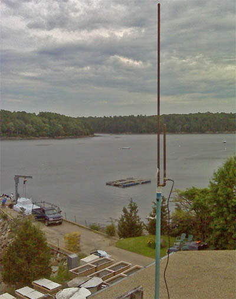
06.26.2009 14:06
Phil Zimbardo TED talk
Seeing this guy speak in person is
quite the experience!
and 2008:
and 2008:
06.26.2009 12:32
Sansa Clip music player
I am now the prowd owner of a Sansa
Clip mp3 player. This is the first digital music device that I've
owned that isn't an iPod. We looked at the new shuffle and couldn't
figure out what Apple was thinking. The Sansa Clip just works. It
shows up on my mac as a drive, I add files to the music, podcast,
and audiobook folders. Then I eject the drive, it takes about 10
seconds to scan the changes. Then I just use it. It's small, light,
and I don't notice it on my while working out. It's so unlike the
iPod, which Apple has decided to lock down. I haven't yet tried the
FM receiver or the recording capability. here is what I see when
loading music:
In case you are interested, the SYS files are binary, but version.sdk is just a text file:
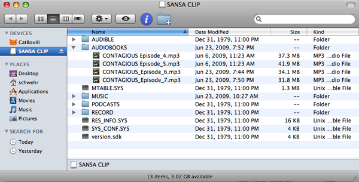
In case you are interested, the SYS files are binary, but version.sdk is just a text file:
#DO NOT EDIT OR REMOVE THIS FILE Product: Clip FW: V02.01.32A Region: Americas
06.26.2009 05:52
UNH iTunesU
I just recently found out that
UNH has an iTunesU. There
isn't a huge amount of Marine content, but I found a clip about a
local commerical Open Ocean Aquaculture (OOA) project.
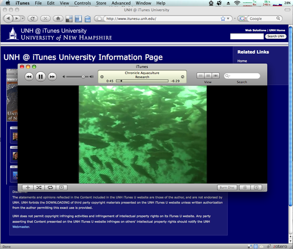
06.26.2009 00:24
udcshel youtube channel
youtube udcshel:
And...
UBC-Gavia: The (Un)Common Loon in the Lake [pavilionlake.com]
Videos related to the efforts of faculty, staff, students, and associates of the Coastal Sediments, Hydrodynamics, and Engineering Lab (CSHEL). For more info check out our website geology.udel.edu/cshel/
And...
UBC-Gavia: The (Un)Common Loon in the Lake [pavilionlake.com]
... This year we are particularly excited to have Dr. Art Trembanis joining the project who will be bringing some very high-tech toys with him from the University of Delaware. Dr. Trembanis may have an uncommon name (apparently he is one of only 6 Trembanis' in the world - the other 5 being his immediate family) but he's certainly no loon. Art is the happy owner of another Gavia AUV that is equipped with an inertial navigation system (INS), the navigation instrument found on commercial airliners. ...
06.25.2009 09:16
Geologic Symbols for Google Earth
Peter Selkin has been posting some
great stuff on his blog - Oblate
Spheroid. Check these out:
Check out the Geologic Map Symbol KML Generator [SDSU]
And this video of Fred Vine explaining magnetic reversals recorded in the sea floor:
Check out the Geologic Map Symbol KML Generator [SDSU]
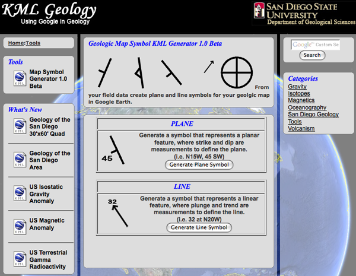
And this video of Fred Vine explaining magnetic reversals recorded in the sea floor:
06.25.2009 09:02
Detecting landmarks in images
A new landmark in computer vision [Google Blog]
...At Google, we think computer vision has tremendous potential benefits for consumers, which is why we're dedicated to research in this area. And today, a Google team is presenting a paper on landmark recognition (think: Statue of Liberty, Eiffel Tower) at the Computer Vision and Pattern Recognition (CVPR) conference in Miami, Florida. In the paper, we present a new technology that enables computers to quickly and efficiently identify images of more than 50,000 landmarks from all over the world with 80% accuracy. ...A link to the paper is at the bottom of the blog post.
06.24.2009 21:12
geojson python __geo_interface__
I've been looking at JSON and GeoJSON
today trying to fit it into my project in a way that makes sense.
I'd like to provide something that isn't confusing and doesn't
require the user of the interface to know or do anything special.
How do I do this with the python 2.6 json (that looks a lot like
simplejson)? I tried GeoJSON and it's got something exactly like
that: the "Python Geo Interface". I add one method to my class and
it's set. My original code:
Trackback: Thanks to Sean for answering in his blog! Geo interface and Python 2.6
% ipython2.6 import imo_001_22_area_notice as a import geojson pt = a.AreaNoticeCirclePt(-69, 42, radius=9260) geojson.dumps(pt)This is not happy when I run it.
ERROR: An unexpected error occurred while tokenizing input
The following traceback may be corrupted or invalid
The error message is: ('EOF in multi-line statement', (9, 0))
ValueError Traceback (most recent call last)
/Users/schwehr/projects/src/ais-areanotice-py/<ipython console> in <module>()
/sw/lib/python2.6/site-packages/geojson/codec.pyc in dumps(obj, cls, **kwargs)
36
37 def dumps(obj, cls=GeoJSONEncoder, **kwargs):
===> 38 return simplejson.dumps(to_mapping(obj), cls=cls, **kwargs)
39
40
/sw/lib/python2.6/site-packages/geojson/mapping.pyc in to_mapping(ob)
16 msg = "Expecting something that has %r or a mapping, got %r"
17 msg %= (GEO_INTERFACE_MARKER, ob)
===> 18 raise ValueError(msg)
19 return Mapping(candidate)
20
I just had to add the Geo Interface to my class:
@property
def __geo_interface__(self):
return {'area_shape':0,
'type':'Point', 'coordinates': (self.lon, self.lat),
'radius':self.radius, 'scale_factor':self.scale_factor}
Now with it working:
Out[50]: '{"scale_factor": 10, "type": "Point", "radius": 9260, "coordinates": [-69, 42], "area_shape": 0}'
Now how can I do that something like that with Python 2.6's json
module?Trackback: Thanks to Sean for answering in his blog! Geo interface and Python 2.6
06.24.2009 20:21
iPhone for field geologists (or other field scientists)
Back when I was in field camp in 1993
and everytime I've been in the field since, I have pondered the
posibilities of what could be done with portable computing power to
make the field scientist more effective. Panasonic ToughBooks are
heavy and so are laser ranfinding glasses. I remember seeing the
combination back in 1994 or 95 and thinking that these technologies
were almost there. It's now 15 years later and we are "almost
there" with the iPhone accept that it's not rugged. There are great
cameras with built in GPS cameras, compasses and soon the new laser
range finders won't have to sit on a mount with the camera. It's
great to see the rest of the community thinking about this too. I
think my professors in the early 90's assumed I was crazy trying to
mix so much computer science into my geology, but it has done well
for me. This post was triggered by seeing Chris Rowan's post:
Could an iPhone be a useful field tool? [Highly Allochthonous],
which links to
The iPhone: A Field Tool for Geologists? [Bob Jamieson]. I
think we need to start writing a bunch of very custom applications
focused on our specific tasks to really make a big impact beyond
basic note taking, pictures, and GPS/maps. High on my list is to
create a little core collection worksheet with proper metadata
export for when we collect cores at sea... next we need a
waterproof iPhone that floats when you drop it over the side of the
ship!
The list goes on and on... I have thoughts of realtime stereonet plots that build on the fly and help you to make sure you have enough data before you head back from the field. etc... etc...
Now back to trying to make my latest project do a proper JSON serialization of the Python classes that fits with ESR's proposal for AIS JSON.
Trackback: iPhone as a tool for hydrographers [The Moni Blog]
The list goes on and on... I have thoughts of realtime stereonet plots that build on the fly and help you to make sure you have enough data before you head back from the field. etc... etc...
Now back to trying to make my latest project do a proper JSON serialization of the Python classes that fits with ESR's proposal for AIS JSON.
Trackback: iPhone as a tool for hydrographers [The Moni Blog]
06.24.2009 12:40
Python inheritance
I'm building some python code where
the parent needs some information from the child classes to
serialize an AIS Binary Message. I gave it a try and somehow
thought that python couldn't do this. I resorted to setting an
attribute in the child, which is ugly. I posted to the python
mailing list and quickly got an answer!
Thanks to Jean-Michel for setting me straight on this. I must have done something dumb in my trying to do this. He wrote a great example.
As yes, it does work as I originally thought it should!
Thanks to Jean-Michel for setting me straight on this. I must have done something dumb in my trying to do this. He wrote a great example.
#!/usr/bin/env python
class Parent:
def foo(self):
raise NotImplementedError() # virtual method, it has to be overridden by any children
def bar(self):
self.foo()
class Son(Parent):
def foo(self):
print "I'm your son"
class Daughter(Parent):
def foo(self):
print "I'm your daughter"
Son().bar()
"I'm your son"
d = Daughter()
d.bar()
Running it:
% ./foo.py I'm your son I'm your daughterI definitely like the concept of adding the NotImplmentedError to give the same concept as a pure virtual in C++.
As yes, it does work as I originally thought it should!
06.24.2009 12:13
WKT Raster
Check out a Google Summer of Code
(GSoC) project to add WKT Raster support to gdal:
GSoC 09 Weekly Report #4: 12/06 - 19/06 [GIS4Free]
To go with this, check out: PostGIS WKT Raster
To go with this, check out: PostGIS WKT Raster
06.23.2009 16:31
Whales and ship noise
What It
Sounds Like to Be a Whale
... In the last decade, scientists have realized that noise generated by ships often drowns the natural sounds of the sea. Some types of sonar, especially those used by military vessels, can be heard for hundreds of miles. Together with engine noise, these produce an aquatic roar heard across Earth's oceans, often at levels that humans associate with airports and rock concerts. ...Just remember that dB levels in water do not have the same reference level than that used in air and are not directly comparable.
06.23.2009 15:10
The old VisLab stereoscope
Somehow I never managed to post any
pictures of the old VisLab setup of the high resolution
stereoscope. And I have no images in my library of the system in
actual use. I will have to fix that soon! Since the time of these
images, the system has been moved to the new VisLab in the new wing
of the Chase Ocean Engineering building and the gang of 4 linux
boxes has been replaced with a single much more powerful linux box
with multiple graphics cards.
Back in 2006, Stephan was kind enough to take a break from coding his haptics thesis project and pose in front of the mirrors. Now I need to remember to grab a camera the next time we have the system running.
The system is driven by 2 ViewSonic VP2290b monitors that are 3840x2400 pixels with 204 dpi at 41Hz in a 478x299mm form factor.
Back in 2006, Stephan was kind enough to take a break from coding his haptics thesis project and pose in front of the mirrors. Now I need to remember to grab a camera the next time we have the system running.
The system is driven by 2 ViewSonic VP2290b monitors that are 3840x2400 pixels with 204 dpi at 41Hz in a 478x299mm form factor.
06.23.2009 08:07
NASA K10 Robot and Google Earth
Matt Deans has a nice post on the
current field test web page:
Google Earth for Robot Planning, Operations and Visualization
[lunarscience.nasa.gov]
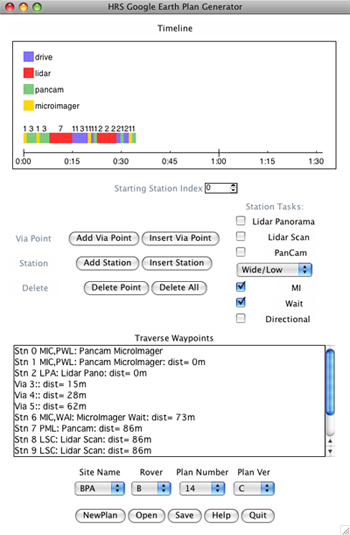
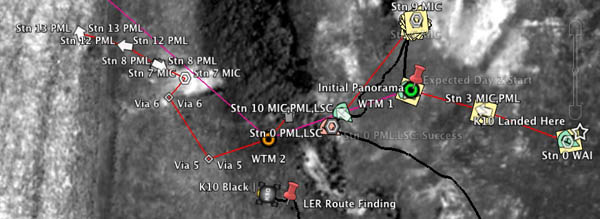
06.22.2009 21:56
More Notice of Arrival forms for mariners
Coast Guard issues notice of proposed rulemaking on Notice of
Arrival on the Outer Continental Shelf
... The proposed rule begins the process of implementing section 109 of the Security and Accountability for Every Port Act of 2006. The rulemaking proposes that owners and operators of United States flag and foreign flag floating facilities, mobile offshore drilling units and vessels be required to submit notice of arrival information to the National Vessel Movement Center prior to engaging in Outer Continental Shelf activities. Requiring owners or operators to submit notice of arrival information will provide the Coast Guard with knowledge of individuals and units engaging in Outer Continental Shelf activities and will better enable the Coast Guard to prevent and respond to safety or security incidents on the Outer Continental Shelf. ...
06.22.2009 17:56
Binary format description languages
There are many langages to describe
binary data formats. Probably the most common is "use the source"
where we are expected to read the source code (which is often not
available). I used XDR and love the fact
that it provides a BNF grammar, so it was pretty easy to put
together a YACC/Bison parser of definitions. Then came XML and lots
more complication. There are things like ASN.1,
that while a standard, are not XML. An example of ASN.1 pulled from
the wikipedia article:
Here is a stripped down example of what Roland uses for parsing multibeam packets:
What I've looked for and haven't found is a version of ASN.1 that is ML for the specification (not XER). There is no need for another library if I could just use lxml or such to read the specification.
FooProtocol DEFINITIONS ::= BEGIN
FooQuestion ::= SEQUENCE {
trackingNumber INTEGER,
question IA5String
}
FooAnswer ::= SEQUENCE {
questionNumber INTEGER,
answer BOOLEAN
}
END
I tried to create my own XML definition for AIS Messages and got
bogged down in trying to push the community towards simpler
messages. My message definition is really focused on documentation
and explicitly defining all sorts of lookup tables (and being cross
language). Eric S. Raymond did a nice job of pushing back in the
other direction with his very direct and minimalistic definition:
epfd_type_legends = (
"Undefined",
"GPS",
"GLONASS",
"Combined GPS/GLONASS",
"Loran-C",
"Chayka",
"Integrated navigation system",
"Surveyed",
"Galileo",
)
type4 = (
bitfield("year", 14, "unsigned", 0, "Year"),
bitfield("month", 4, "unsigned", 0, "Month"),
bitfield("day", 5, "unsigned", 0, "Day"),
bitfield("hour", 5, "unsigned", 24, "Hour"),
bitfield("minute", 6, "unsigned", 60, "Minute"),
bitfield("second", 6, "unsigned", 60, "Second"),
bitfield("accuracy", 1, "unsigned", None, "Fix quality"),
bitfield("lon", 28, "signed", 0x6791AC0, "Longitude",
formatter=cnb_latlon_format),
bitfield("lat", 27, "signed", 0x3412140, "Latitude",
formatter=cnb_latlon_format),
bitfield("epfd", 4, "unsigned", None, "Type of EPFD",
validator=lambda n: n >= 0 and n <= 8,
formatter=epfd_type_legends),
spare(10),
bitfield("raim", 1, "unsigned", None, "RAIM flag "),
bitfield("radio", 19, "unsigned", None, "SOTDMA state"),
)
Roland has been watching what Brian Calder and I have been doing
for a while now. Brian has a TACC/Bison grammar for multibeam files
and I have my complicated AIS XML. Roland took a middle ground
approach that he has been using for a while. I like a lot about it.
Perhaps that is because it is similar to my AIS XML (e.g.
ais_msg_1.xml), but simpler. The complications came from the
desire to be able to directly represent the messages as spatially
SQL database tables (with optional spatial support), XML
representation for documentation, KML for visualization, mandatory
units, agressive ranging and enumeration, and trying to figure out
a cross platform expression implementation (that I never
attempted). I definitely should have kept the test component out
the definition, which I am aiming to do with a JSON based unified
transport protocol that ESR proposed. Perhaps if I had started more
like ASN.1 where the initial specification is separate from the
"Encoding Rules" like ER (XML Encoding Rules), it would have been a
bit cleaner.Here is a stripped down example of what Roland uses for parsing multibeam packets:
<BinaryFormat>
<Type name="uint8" size="1">
<Cxx type="uint8_t"/>
<Python structFormat="B"/>
</Type>
<Type name="uint16" size="2">
<Cxx type="uint16_t"/>
<Python structFormat="H"/>
</Type>
<Type name="int16" size="2">
<Cxx type="int16_t"/>
<Python structFormat="h"/>
</Type>
<Type name="uint32" size="4">
<Cxx type="uint32_t"/>
<Python structFormat="I"/>
</Type>
<Type name="float" size="4">
<Cxx type="float"/>
<Python structFormat="f"/>
</Type>
<Type name="double" size="8">
<Cxx type="double"/>
<Python structFormat="d"/>
</Type>
<Type name="char" size="1">
<Cxx type="char"/>
<Python structFormat="c"/>
</Type>
<Block name="String">
<Field name="size" type="uint16"/>
<Field name="string" type="char" count="size"/>
</Block>
<Block name="FloatArray">
<Field name="size" type="uint16"/>
<Field name="values" type="float" count="size"/>
</Block>
<Type name="time" size="8">
<Units>s</Units>
<Documentation>Seconds since 1970</Documentation>
<Cxx type="double"/>
</Type>
<Type name="degrees" base="double">
<Units>degrees</Units>
</Type>
<Type name="heading" base="degrees_f">
<Documentation>Clockwise relative to north</Documentation>
</Type>
<Type name="altitude" base="float">
<Units>meters</Units>
<Documentation>Positive is up</Documentation>
</Type>
<Block name="CompressedValuesBase">
<Field name="scale" type="float"/>
<Field name="offset" type="float"/>
<Field name="count" type="uint16"/>
</Block>
<Block name="CompressedValues8">
<Inline type="CompressedValuesBase"/>
<Field name="values" type="uint8" count="count"/>
</Block>
<Block name="GeographicPosition">
<Field name = "latitude" type="degrees"/>
<Field name = "longitude" type="degrees"/>
</Block>
<Block name="UTMPosition">
<Field name="easting" type="double"/>
<Field name="northing" type="double"/>
<Field name="zone" type="uint8"><Default>0</Default></Field>
<Field name="latitudeZone" type="uint8"><Default>0</Default></Field>
</Block>
<Block name="Packet" sizeField="size">
<Field name="header" type="char" count="4">
<Default>'g','z','4','d'</Default>
<Validation>
<Equals>'g','z','4','d'</Equals>
</Validation>
</Field>
<Field name="version" type="uint16"><Default>1</Default></Field>
<Switch indexField="type">
<Block name="Metadata" id="1">
<Field name="metaType" type="uint16"/>
<Switch indexField="metaType">
<Block name="Text" id="1">
<Inline type="String"/>
</Block>
</Switch>
</Block>
<Block name="Navigation" base="Packet" id="2">
<Field name="navChannel" type="uint16"><Default>0</Default></Field>
<Field name="navType" type="uint16"/>
</Block>
</Switch>
</Block>
<Implement>String</Implement>
<Implement>CompressedValues8</Implement>
<Implement>Variance3D</Implement>
<Implement>Packet</Implement>
</BinaryFormat>
At this point, Roland just has working code and data definitions as
the documentation of his specifiation. The Implement section
at the end are the objects that should become classes at the end of
the parsing.What I've looked for and haven't found is a version of ASN.1 that is ML for the specification (not XER). There is no need for another library if I could just use lxml or such to read the specification.
06.22.2009 12:42
Guidelines for setting AIS draught?
A question for mariners: What
guidelines do you use for setting draught for your AIS device and
why? From my perspective, I would expect the value to be changing
with cargo and fuel such that draught and position combined with
bathymetry yields under-keel clearance.
Comments can be posted on Live Journal.
Mostly I see pretty constant draught values for ships, but the Nor`Easter caught my eye as having quite a few transitions of draught during 2008. Note that I also see length starting at 181m and switching to 183 meters part way through the year.
And here is the code to make the data for the plot from my sqlite database.
Comments can be posted on Live Journal.
Mostly I see pretty constant draught values for ships, but the Nor`Easter caught my eye as having quite a few transitions of draught during 2008. Note that I also see length starting at 181m and switching to 183 meters part way through the year.
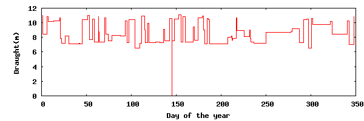
And here is the code to make the data for the plot from my sqlite database.
#!/usr/bin/env python
import sqlite3
import datetime
cx = sqlite3.connect('2008-5.unique.db3')
cx.row_factory = sqlite3.Row
last = None
for row in cx.execute('select * from shipdata where userid=538002219;'):
ts = datetime.datetime.strptime(row['cg_timestamp'],'%Y-%m-%d %H:%M:%S')
#print type(ts),ts
day = ts.strftime('%j')
seconds = (ts - datetime.datetime(ts.year,ts.month,ts.day)).seconds
if last != None:
print '%s.%d %3.1f' % (day,seconds,last)
last = row['draught']
print '%s.%d %3.1f' % (day,seconds,row['draught'])
06.22.2009 11:59
Facebook and the chart of the future
Just last week, I was wondering out
loud how Facebook, LinkedIn and Twitter might fit into my research.
I really just use them to keep in touch with people that I work
with. I was wondering how this might fit better into the Chart of
the Future, Maritime Operations, Spacecraft, etc. Then this
morning, I see this:
Coast Guard uses Facebook to locate boater; saves thousands in tax dollars
Also consider getting an AIS device. If you are in USCG coverage, they will have a record of where you were before trouble was reported. USCG coverage isn't perfect and is especially constrained for smaller vessels with lower antennas and the low power of Class B.
Coast Guard uses Facebook to locate boater; saves thousands in tax dollars
... Before launching a costly search by Coast Guard aircraft and cutters and with little amplifying information, Paul Conner, the search and rescue controller at Coast Guard Sector Northern New England who was running the case, decided to use the social networking site Facebook to enhance his search means. Knowing the popularity of internet networking sites, Conner used Facebook to check for any contact information on the missing fisherman or his relatives. "Sometimes we have to be very creative in our information gathering,¡ said Conner. ´A simple internet search can often help us locate a missing person before a boat or aircraft is even on scene." Conner was ultimately able to locate an email address and contact number for one of the missing fisherman's relatives. He sent an email to the listed address, but in the end the phone number led him to speak to the fisherman directly, who was not in any distress and moored at a different location than his trailer and vehicle. ...On the flip side, you still should leave a proper sailing plan with those on shore when you go out to sea so that if something does happen, you have a better chance of rescue, or in the case of a non-event, saving the USCG from going out for Search And Rescue (SAR).
Also consider getting an AIS device. If you are in USCG coverage, they will have a record of where you were before trouble was reported. USCG coverage isn't perfect and is especially constrained for smaller vessels with lower antennas and the low power of Class B.
06.22.2009 02:32
python generator for xml - gavia navigation
I've been playing a bit more with the
gavia navigation. It comes as ML in a list of entries. Here is what
one entry looks like:
<entry timestamp="1186499188.996763000" time="2007 08 7 15:06:28.996">
<magnetic-deviation>18.5089</magnetic-deviation>
<orientation>
<heading>188.401</heading>
<pitch>-0.933838</pitch>
<roll>24.7852</roll>
</orientation>
<position>
<depth>0.0035894</depth>
<lat>5052.2666N</lat>
<lon>12144.4970W</lon>
</position>
<sound-velocity>1490</sound-velocity>
<valid>36415</valid>
<variance>
<var_lat>81.6767</var_lat>
<var_lat_lon>0</var_lat_lon>
<var_lon>81.6767</var_lon>
</variance>
<velocity>
<heave>0</heave>
<surge>-0</surge>
<sway>-0</sway>
</velocity>
<zero-altitude>0</zero-altitude>
</entry>
I wrote some code that loops through looking for the beginning and
ending entry tags and then passes the block to lxml.
def parse_entry(entry_xml_text):
et = etree.XML(entry_xml_text)
entry={}
try: # Crit entries... must have
entry['timestamp'] = float(et.attrib['timestamp'])
entry['datetime'] = datetime.datetime.utcfromtimestamp(int(entry['timestamp']))
entry['depth'] = float(et.xpath('//*/depth')[0].text)
entry['lon'] = parse_lon(et.xpath('//*/lon')[0].text)
entry['lat'] = parse_lat(et.xpath('//*/lat')[0].text)
except Exception, e:
return None
for field in ('heading', 'pitch', 'roll', 'sound-velocity',
'var_lat','var_lon','valid', 'magnetic-deviation',
'heave','sway','zero-altitude'):
try:
entry[field] = float(et.xpath('//*/%s' % (field,))[0].text)
except:
pass # optional - try to grab these fields if available
return entry
def nav_iter(filename):
'''generator for gavia navigation entries'''
cache = []
entries = []
for line in file(filename):
if '<entry' in line:
cache = []
cache.append(line)
continue
cache.append(line)
if '</entry>' in line:
entry_xml = ''.join(cache)
entry = parse_entry(entry_xml)
if entry is not None:
yield entry # Make this a generator so that we can iterate across entries
cache = []
continue
def main():
# setup goes here
for entry in nav_iter(filename):
if entry is None:
continue
# Do something with the entry dict here
This works pretty well, but I wanted to give a go at using the lxml
event method of access, since it is likely to be more robust.
def nav_iter(filename):
'''generator for gavia navigation entries'''
for i, (event, element) in enumerate(etree.iterparse(filename,events=('end',))):
if element.tag != 'entry':
continue
entry = parse_entry(element)
element.clear() # Free up memory
if entry is not None:
yield entry # Make this a generator so that we can iterate across entries
However, I noticed that it was running really really slow once it
got past about 10000 entries. I figured out that I could tell it to
only generate "end" events and that left out all the starts. Then I
also added a clear to the element after I processed it. That was a
huge speed up, but it still seemed slow. A quick time test (using
the unix time command)
manual search: real 0m1.464s user 0m1.306s sys 0m0.057s lxml event search real 0m4.310s user 0m4.172s sys 0m0.079sClearly, I need to switch to SAX like parsing if I want to stick with lxml to find the events and be fast.
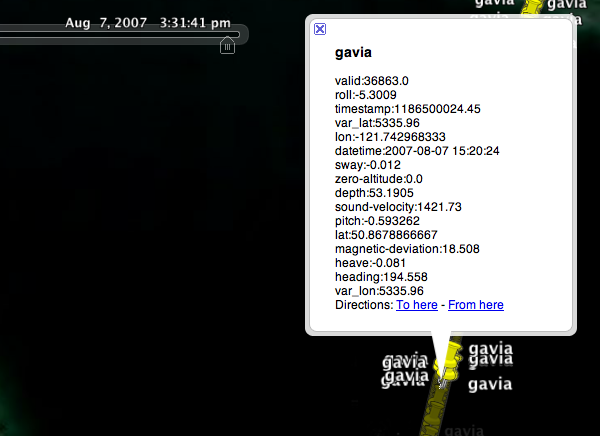
06.21.2009 18:52
Tall ships coming this summer
Cleaning out the old cell phone...
This image was from 2007 and never got posted. This year, the tall
ships are supposed to be in New Hampshire August 7-9.
06.20.2009 12:28
CCOM/JHC Healy 2008 cruise videos
While looking for something else, I
stumbled across these great videos here: National Ocean Service
Videos. These three videos come the 2008 USCGC Healy icebreaker
cruise for CCOM/JHC to the Arctic Ocean for
Law of the Sea Mapping Program.
06.19.2009 08:44
Google Earth Browser plugin - Vessel Traffic Design
I found this Google Earth Browser
Plugin tour to be interesting because it includes a section looking
at changing how ships move through the two bridges near Portland,
OR. SmartBridge.org
produced this website: Alternatives
[bikefuel.com]
This brings up an interesting point about AIS. AIS includes draught (draft), which is the depth of the lowest part of the ship, but does not include air daught. There are binary messages that allow authorities to broadcast the air gap under a bridge (that changes with temperature as the bridge sags), but nothing for the traffic going through an area. It is therefore difficult to really know what clearance is needed for a new or altered bridge. There was also no analysis of the waterway to show what would be needed from the Army Corps Of Engineers (ACOE) in terms of dredging and channel control.
Link found from: Google Earth Design blog
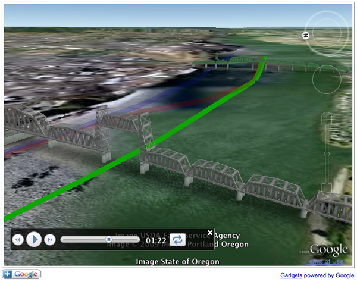
This brings up an interesting point about AIS. AIS includes draught (draft), which is the depth of the lowest part of the ship, but does not include air daught. There are binary messages that allow authorities to broadcast the air gap under a bridge (that changes with temperature as the bridge sags), but nothing for the traffic going through an area. It is therefore difficult to really know what clearance is needed for a new or altered bridge. There was also no analysis of the waterway to show what would be needed from the Army Corps Of Engineers (ACOE) in terms of dredging and channel control.
Link found from: Google Earth Design blog
06.19.2009 08:07
Visualization of number of phone calls
Back in 1998, Alex and I saw an
amazing visualization of call volume across the United States when
we were visiting the AT&T labs for their student research
competition (which Alex won). I've never seen a video of that work
online, but this is kind of close. It's not as cool as watching the
country progressively wake up from East to West and go about their
day, but I still like it.
Found via Rich's blog: Quick Links: 3D Thematic Viz, Bridges Tour and Tobler's Law [Google Earth Design]
...Through an analysis of the number of mobile phone calls made in Washington D.C. on Inauguration Day and the home state or country of phone origin, it is possible to see peaks of call activity as the crowd anticipates President Obama's oath, a drop in call activity as the crowd listens to his inaugural address, and peaks again as the crowd celebrates the inauguration of the new President. ...
Found via Rich's blog: Quick Links: 3D Thematic Viz, Bridges Tour and Tobler's Law [Google Earth Design]
06.19.2009 00:17
Beginning Python Visualization
I just got a copy of Beginning
Python Visualization. I really like the book and am learning a
lot. However, I'm either missing something or there needs to be
more errata. For example in chapter 4, there is some weird array
syntax. I tried downloading the source, but it is the same text.
yearday = zeros(len(values[:, 0]))When I try to run the example, there is no data file in the data directory:
% python2.5 stock_charts.py
Traceback (most recent call last):
File "stock_charts.py", line 11, in <module%gt;
for row in csv.reader(open(filepath), delimiter='\t'):
IOError: [Errno 2] No such file or directory: '../data/charts.xls'
I typed in the data and the code ran just fine. And the indexing
that was confusing was from the world of numpy and arrays -
specifically multi-dimensional arrays.
% python
>>> import numpy
>>> numpy.arange(36).reshape(6,6)
array([[ 0, 1, 2, 3, 4, 5],
[ 6, 7, 8, 9, 10, 11],
[12, 13, 14, 15, 16, 17],
[18, 19, 20, 21, 22, 23],
[24, 25, 26, 27, 28, 29],
[30, 31, 32, 33, 34, 35]])
>>> a = numpy.arange(36).reshape(6,6)
>>> a[:,2] # Slice out a column
array([ 2, 8, 14, 20, 26, 32])
The book could have used a bit more of an introduction to arrays
earlier or at least refer forward to the section. N-Dimensional
Arrays comes at page 236 and I hit this on page 110. Now that I
know what I'm looking at, it makes good sense.06.18.2009 07:56
gCaptain interviews the USCG Assistant Commandant for Acquisitions and Chief Acquisition Officer
This is a must read interview.
RDML
Ronald J. Rabago Named Assistant Commandant for Acquisition, Chief
Acquisition Officer - gCaptain Interview
... You are probably familiar with AIS (Automatic Identification System). That system allows information about a ship (position, course, speed, etc.) to be transmitted to other ships in the area and of course to the shore. So using network technologies, we can be aware of what ships are coming and going into our ports. Of course that is important for the mariner and important for national security so we can see the large ships that come in and out of our harbors. gCaptain: Is AIS going to remain VHF based? Well I think you will continue to have voice radio as the means of communication, but as you may know, AIS currently has a messaging capability that sends the Coast Guard a 'receive only' message. We are in the process of awarding a contract that will allow us to transmit data messages as well. We hopefully will be able to transmit out a variety of messages like a 'notice to mariners', security issues for a particular port and those kinds of things. However, there is a limited size on these AIS messages, so voice radios (using VHF) will still be a key communication tool. So AIS allows the Coast Guard Sectors and other port partners to maintain awareness. ...I think John might have been asking him about Wifi, WiMax and others. AIS and Marine voice both go out over the marine VHF channels.
06.17.2009 12:23
AUV Boot Camp - two more pictures
The UDel team has uploaded their
photos from the AUV Boot Camp... the team has already completed
another project since leaving Mendum's Pond!
Gavia seen through the window on the side of the test tank:
The Video Ray ROV looking back at the operators:
Gavia seen through the window on the side of the test tank:
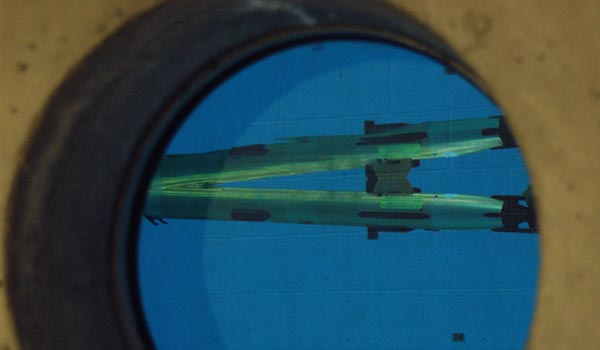
The Video Ray ROV looking back at the operators:
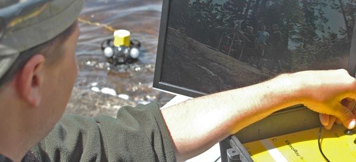
06.17.2009 10:35
NOAA Blogs?
Lots of government groups, people,
and projects have blogs. For example: The Phoenix Mars
Lander, The TSA Blog,
The Blog @ Homeland
Security, iCommandant
- Web Journal of Admiral Thad Allen (USCG), and so forth, but
are there any from NOAA?
If you know of any that you like, post them over on live journal
If you know of any that you like, post them over on live journal
06.17.2009 08:51
UNH Speakers Bureau
Thanks to Nora for adding me to the
UNH
Speakers Bureau:
Speaker: Kurt Schwehr
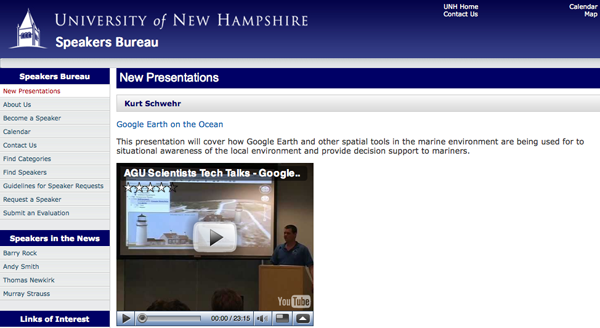
Speaker: Kurt Schwehr
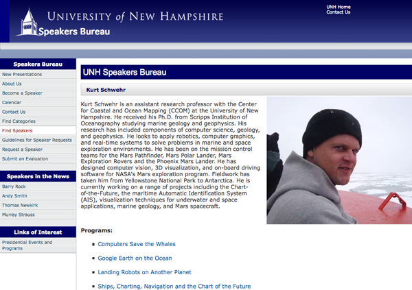
06.17.2009 08:27
iPhone and AUVs
This image is compliments of Art. An AUV being controlled via
an iPhone. It's not a native app yet, but it is still neat
to have the AUV interface up on the iPhone even if it's through a
remote desktop/VNC view.
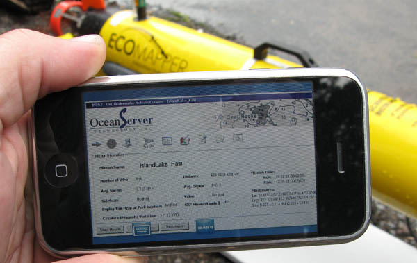
06.16.2009 15:41
tide station at Star Island
Summer Hydro 2009 is underway. The
students are out mapping. Last month, I posted pictures from a
planning cruise:
Isle of Shoals
The initial data looked pretty good. The big spike comes from work on the sensor.
Kentaro made this plot after pulling out some super fancy awk scripting skills (wow!). Unfortunately, it shows lots of dropouts. We did have a radio modem issue, but we found another classic problem. Some of our dropouts came from how we had the station configured. The crane for the island needs most of the power available on the 15A circuit that the tide station is also on. This the tidestation operating, the circuit breaker trips. The staff had to unplug the the station to operate the crane. Since they aren't used to us science types, they didn't remember to plug the tide station back in. An hour and a half later, the UPS ran out of power and the station dropped off line.
The tide station is now set to a lower sample rate so it doesn't overflow its internal buffers and logging locally.
Christina kept an eye on the GPS station as they surveyed in the old National Ocean Survy benchmark: 97514 - 1976.
Isle of Shoals
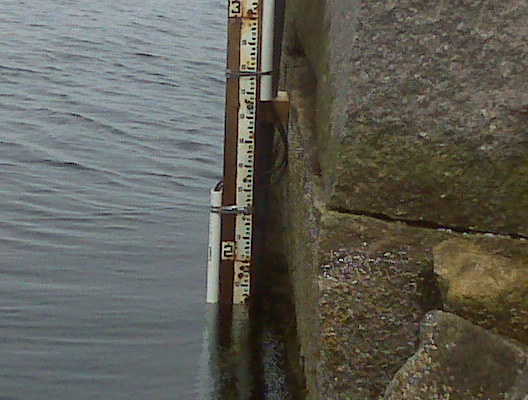
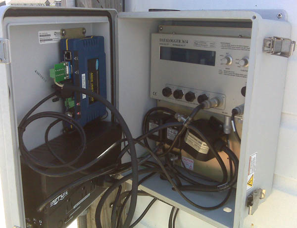
The initial data looked pretty good. The big spike comes from work on the sensor.
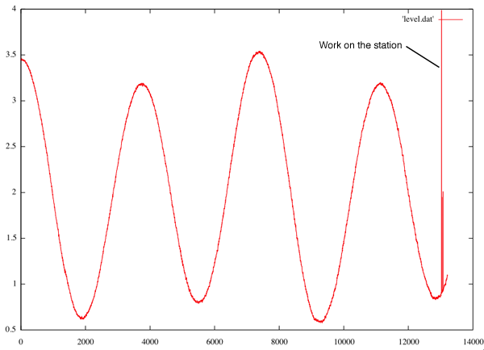
Kentaro made this plot after pulling out some super fancy awk scripting skills (wow!). Unfortunately, it shows lots of dropouts. We did have a radio modem issue, but we found another classic problem. Some of our dropouts came from how we had the station configured. The crane for the island needs most of the power available on the 15A circuit that the tide station is also on. This the tidestation operating, the circuit breaker trips. The staff had to unplug the the station to operate the crane. Since they aren't used to us science types, they didn't remember to plug the tide station back in. An hour and a half later, the UPS ran out of power and the station dropped off line.
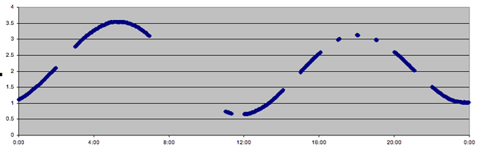
The tide station is now set to a lower sample rate so it doesn't overflow its internal buffers and logging locally.
Christina kept an eye on the GPS station as they surveyed in the old National Ocean Survy benchmark: 97514 - 1976.
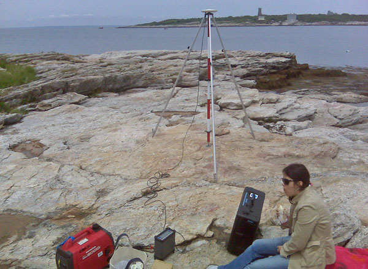
06.16.2009 11:30
Penguin tagging
Roland and Colin are back from whale
tagging in Antarctica. Roland is now practicing his techniques for
tagging penguins with a DTag 
06.16.2009 10:58
Garden is getting established
The garden is doing well. The first
round of lettuce and onions is done and I'm letting it go to seed.
Everything else is just getting established. There is going to have
to be some shuffling to handle the over crowding in some areas and
the three patches were nothing took. The cantaloupe, swiss chard,
eggplant, and basil seem to be struggling.
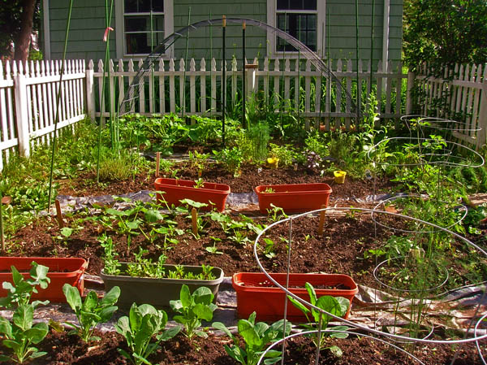
06.16.2009 10:15
Finding unique vessel descriptions from AIS
I just went through the processing a
years worth of AIS shipdata messages (msg 5) to create a list of
all the unique vessel descriptions. This is more than just a list
of unique MMSI. For each MMSI, I want to know what different
configurations there are in terms of size, draft, name, callsign,
and IMO number. Often multiple vessels are using the same MMSI
(which you are not supposed to do)...
I start by normalizing all the multipart messages and then extracting just the msg 5 lines with an egrep call. Then I loop through the data in python and build a "vessel id" that is a tuple of the key parameters that I'm interested in. I use the python set data type to key the unique list of vessel id's so I can tell if the current NMEA line represents a new combination. If it's new, I write out the NMEA line.
Note, 3669734 is the transceiver out at Cape Cod that provides the right whale notices. In the initial deployment, it broadcast its position and idenity. It showed up as RDC (meaning USCG Research and Development Center) and NOAA TEST and would have been seen as an icon at the National Seashores Visitor Center.
I start by normalizing all the multipart messages and then extracting just the msg 5 lines with an egrep call. Then I loop through the data in python and build a "vessel id" that is a tuple of the key parameters that I'm interested in. I use the python set data type to key the unique list of vessel id's so I can tell if the current NMEA line represents a new combination. If it's new, I write out the NMEA line.
#!/usr/bin/env python
import sys
from BitVector import BitVector
import ais.binary as binary
import ais.ais_msg_5
if __name__=='__main__':
for filename in sys.argv[1:]:
vessels_set = set()
for linenum,line in enumerate(file(filename)):
if linenum%10000 == 0:
sys.stderr.write('%d %d\n'% (linenum,len(vessels_set)))
fields=line.split(',')
if len(fields)<5: continue
bv = binary.ais6tobitvec(fields[5])
m = ais.ais_msg_5.decode(bv)
vessel_id = (m['UserID'],m['IMOnumber'],m['callsign'].rstrip(' @'),m['name'].rstrip(' @'),m['shipandcargo'],
m['dimA']+m['dimB'], m['dimC']+m['dimD'], float(m['draught']))
if vessel_id not in vessels_set:
vessels_set.add(vessel_id)
print line,
I run that for each month, cat those results together into a year
file, rerun the unique detection code and build an sqlite database
from the final NMEA. From this final NMEA, I build a CSV report
(which can easily be loaded into a spreadsheet). I use a lookup
table of the MMSI prefix country codes to tag each ship with the
country where it is registered.
#!/usr/bin/env python
import sqlite3
if __name__=='__main__':
cx = sqlite3.connect('2008-5.unique.db3')
cx.row_factory = sqlite3.Row
mmsi_prefixes = dict([tuple(row) for row in cx.execute('SELECT code,country FROM mmsi_prefix;')])
vessels = [row['UserID'] for row in cx.execute('SELECT DISTINCT(userid) FROM shipdata;')]
vessels.sort()
vessels = tuple(vessels)
print '#',
print ', '.join( ('userid','IMOnumber', 'name', 'callsign', 'shipandcargo',
'length', 'width', 'draught', 'country') )
for vessel_count,vessel in enumerate(vessels):
for row in cx.execute('select * from shipdata where userid = :vessel ; ', {'vessel':vessel}):
r = row
prefix = int(r['userid'])/1000000
country = 'unknown'
if prefix in mmsi_prefixes:
country = '"'+mmsi_prefixes[prefix].replace(' ','_')+'"'
params = (r['userid'], r['IMOnumber'], r['name'].rstrip(' @'), r['callsign'].rstrip(' @'),
r['shipandcargo'],
r['dimA']+r['dimB'], r['dimC']+ r['dimD'], r['draught'], country)
print ','.join([str(item) for item in params])
Here is a decimated list to give a sense of the types of things
that I see. Most of the MMSI values below 200000000 are not valid.
There are more 1193046 vessels that I show here. This is the well
known value for unconfigured or power glitched Nauticast devices.
If you are a mariner, please check your class A settings regularly!
Entering things like draught draft) might not seem important, but,
in the future, it will be getting used for things like determining
dredging and hydrographic survey priorities. If your draft is zero
or you entered feet when you should have entered meters (or the
other way around), you are preventing managers from understanding
your needs.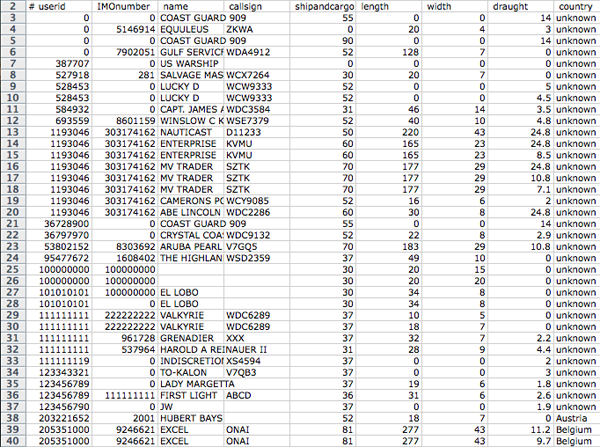
Note, 3669734 is the transceiver out at Cape Cod that provides the right whale notices. In the initial deployment, it broadcast its position and idenity. It showed up as RDC (meaning USCG Research and Development Center) and NOAA TEST and would have been seen as an icon at the National Seashores Visitor Center.
06.15.2009 23:16
Crumbs
It's Stochasticgirl's fault that I'm
looking at the Crumbs online
list of cupcakes. If I were anywhere near LA, I would suggest a
modified Fake Berry adventure part 2 that includes a stop at this
shop. I'm not sure that having a batch of these shipped would equal
the experience of a freshly made cup cake. Nor am I going to make
trip to NY for this, but next time I'm in the area, it's on my
list!
Danger Will Robinson!
Danger Will Robinson!
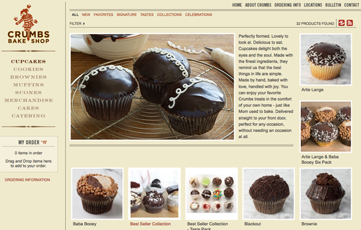
06.15.2009 16:53
MS-Access DB import
Since I did this before and can't
remember how it was done last time, here is how I imported some AIS
position data in MS Access. I thought that I could import using SQL
INSERT commands, but I guess not. I had to do a CSV import to a new
database.
My data looks like this:
Then I used the "Advanced" button. I had to specify my "Date Order" as YMD and check "Four Digit Years". Then I specified my 4 field types and made the mmsi be an indexed field. For file size reasons, I decided to leave off a primary key.
After hitting OK, I then selected the first line as field names and it zipped through the data.
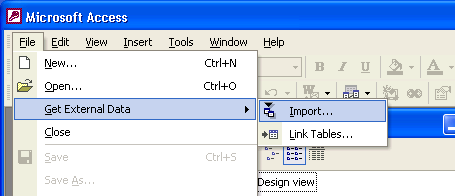
My data looks like this:
% bzcat *.csv.bz2 | head lon,lat,mmsi,timestamp -70.4543233333,41.8040316667,366827210,2008-07-09 12:46:25 -70.4531783333,41.8086866667,366827210,2008-07-09 12:47:25 -70.451145,41.8131566667,366827210,2008-07-09 12:48:25 -70.4477483333,41.8176933333,366827210,2008-07-09 12:49:31
Then I used the "Advanced" button. I had to specify my "Date Order" as YMD and check "Four Digit Years". Then I specified my 4 field types and made the mmsi be an indexed field. For file size reasons, I decided to leave off a primary key.
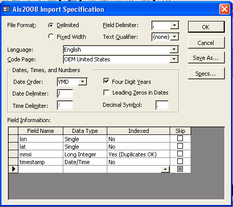
After hitting OK, I then selected the first line as field names and it zipped through the data.
06.15.2009 10:29
Python CSV module
I just tried the Python CSV module
for the first time today. It's not bad. But I could have done this
with split(',') and just about as many lines of code.
Partial sample of the file:
For more, see: PyMOTW: csv
Partial sample of the file:
'timestamp', 'pressure-timeout', 'compass-timeout', 'sound-velocity-timeout', 'temperature-timeout', ... 1216992716,10,,,,,,,,,,,,,,,,,,,,,,,,,,,,,,,,,,, 1216992716,,10,,,,,,,,,,,,,,,,,,,,,,,,,,,,,,,,,, 1216992779,,,,,,,,,,,,,,,,,1,0,153.446,-0.269165,1.92261,2,-0.000921834,3647,100,0,100,0,0,0,0,38.788175,-75.16170167 1216992780,,,,,,,,,,,,,,,,,1,0,152.935,-0.335083,2.09839,2,0.00190314,3647,100,0,100,0,0,0,0,38.78830833,-75.16163667 1216992781,,,,,,,,,,,,,,,,,1,0,152.611,-0.258179,1.98303,2,0.00237893,3647,100,0,100,0,0,0,0,38.78833333,-75.16162 1216992782,,,,,,33.925,,,,,,,,,,,1,0,152.391,-0.340576,2.005,2,0.00238884,3647,100,0,100,0,0,0,0,38.78835833,-75.16161167 1216992783,,,,,,33.886,,,,,,,,,,,1,0,152.336,-0.197754,2.12036,2,0.00208156,3647,100,0,100,0,0,0,0,38.78837833,-75.16160333 1216992784,,,,,,33.847,,,,,,,,,,,1,0,151.985,-0.148315,2.02148,2,0.00206174,3647,100,0,100,0,0,0,0,38.78840167,-75.16159667Now the code to read the file:
import csv
# Get the names of the fields from the first line
fieldnames = [item.strip("' ") for item in file('navigator072508_Excelwork.csv', 'rU').readline().strip().split(',')]
# universal line ending handling for \r delimited files
f = file('navigator.csv', 'rU')
# Each line will be returned as a dictionary
reader = csv.DictReader(f,fieldnames=fieldnames)
for linenum,line in enumerate(reader):
try:
timestamp = int(line['timestamp'])
lon = float(line['lon'])
lat = float(line['lat'])
height = - float(line['depth'])
heading = float(line['heading'])
except:
# Skip lines without enough navigation info
continue
# Do something with the data
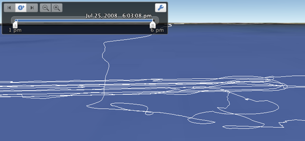
For more, see: PyMOTW: csv
06.13.2009 16:25
Challenge for Mac users
Myche and I have been trying to
figure this one out, but no luck. If you've inserted a USB or
Firewire drive into a mac and ejected it, how can you (without
pulling it out and reattaching it) find and mount it again?
And what is the best way to do this on Linux without resorting to a GUI? At least with linux, if I know the device was /dev/sdb1, then I can just mount sdb1. But what if you don't know where the device is? How do you discover it? There is lsusb, but what exactly would you do?
I've posted to LiveJournal for discussion: Mounted unmounted volumns on Mac (and Linux)
And what is the best way to do this on Linux without resorting to a GUI? At least with linux, if I know the device was /dev/sdb1, then I can just mount sdb1. But what if you don't know where the device is? How do you discover it? There is lsusb, but what exactly would you do?
I've posted to LiveJournal for discussion: Mounted unmounted volumns on Mac (and Linux)
06.12.2009 13:47
Torm Mary grounding in Portsmouth NH
AIS is pretty handy but it can't tell
you everything. A case in point: Last night, the Torm Mary ground
in Portsmouth, NH. Thankfully, no one was hurt and there wasn't
anything spilled.
Oil tanker moored after striking bottom in the Piscataqua River
This plot is dominated by the GPS drift around the dock that looks to be about +/- 25m. Look at the data, it appears that the GPS is mostly in low position accuracy mode... "0: low (greater than 10m)":
Oil tanker moored after striking bottom in the Piscataqua River
... The tanker struck bottom around 10:30 p.m. Coast Guard station Portsmouth Harbor dispatched a 25-foot response boat crew at 11:19 p.m. after receiving a report that Torm Mary's stern had struck the bottom of the riverbed. ...It helps to have the full vessel on the display, but looking at the raw position information, it really is hard to see what is going on.
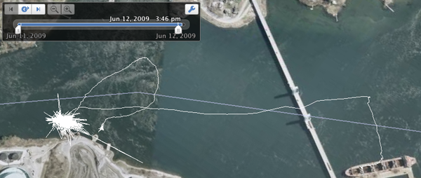
This plot is dominated by the GPS drift around the dock that looks to be about +/- 25m. Look at the data, it appears that the GPS is mostly in low position accuracy mode... "0: low (greater than 10m)":
sqlite> select count(positionaccuracy) from position where positionaccuracy=0; 47444 sqlite> select count(positionaccuracy) from position where positionaccuracy=1; 12518Looking at the individual statistics doesn't make the event jump out:
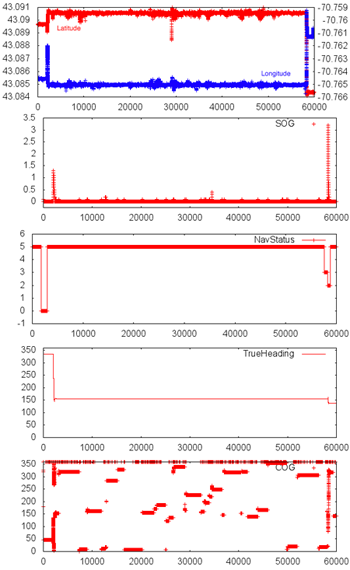
06.12.2009 12:36
Filtering AIS messages before decoding
I've been meaning to explore the idea
of filtering AIS messages before decoding and finally gave it a
closer look. I've been using egrep for quite a while. Here are some
examples of what I've been doing:
I would like to a grep for a vessel name. The MMSI is 30 bits, which is a multiple of 6. AIS NMEA uses 6 bit letters. Unfortunetely, the standard has the repeat idicator right after the message ID and before the MMSI. If only the standard writers had reverset this flag. All of my AIS decoders look like this:
% egrep -h -v 'AIVDM,1,1,[0-9]?,[AB],' log*.ais | ais_normalize.py > log.norm # pull all the multi line ais messages egrep -h -v 'AIVDM,1,1,[0-9]?,[AB],' log*.ais | ais_normalize.py > egrep -h 'AIVDM,1,1,[0-9]?,[AB],5 > log.5.norm # Class A shipdata egrep -h 'AIVDM,1,1,[0-9]?,[AB],[123]' log*.ais > log.123 # Class A position messages egrep -h 'AIVDM,1,1,[0-9]?,[AB],4' log*.ais > log.4 # bsreportsNot that with grep '-v' says reject all messages that match and '-h' says don't include file names
I would like to a grep for a vessel name. The MMSI is 30 bits, which is a multiple of 6. AIS NMEA uses 6 bit letters. Unfortunetely, the standard has the repeat idicator right after the message ID and before the MMSI. If only the standard writers had reverset this flag. All of my AIS decoders look like this:
r['MessageID']=int(bv[:6])
r['RepeatIndicator']=int(bv[6:8])
r['UserID']=int(bv[8:38]) # MMSI
The question then becomes, what is after the MMSI and is it stable?
For Class A position reports, this is Navigation Station. This is
likely to change, so we can't use the last 4 bits of the MMSI. We
can come close when filter with egrep by discarding the last 4
bits. It will let other vessels through, but still get close to
filtering. We hopefully know that there is no repeater operation in
the area (there are none in the Portsmouth, NH area). I'm looking
for the TERM MARY, which has an MMSI of 220112000:
% ipython from BitVector import BitVector import ais.binary as binary binary.bitvectoais6(binary.setBitVectorSize(BitVector(intVal=0),2)+binary.setBitVectorSize(BitVector(intVal=220112000),30))[0][:-1] Out[14]: '3ArTP'Now that I know that '3ArTP' is the TERM MARY and maybe a few other vessels, I can grep for it in my log files:
% egrep -h '[!]AIVDM,1,1,[0-9]?,[AB],[123]3ArT' * !AIVDM,1,1,,B,13ArTP000jJt8ADHaW2:q`kN0`MA,0*57,rnhcml,1244594390.72 !AIVDM,1,1,,A,13ArTP000iJt8:LHaW7:q`kj0t05,0*18,rnhcml,1244594399.36 !AIVDM,2,1,9,A,53ArTP02=64puDQG:21@u8n0l59V22222222221IB`R@@5Tl0FT3lU4k,0*69,rnhcml,1244594405.89 !AIVDM,1,1,,B,13ArTP000iJt83pHaW<:q`lB0`5U,0*7B,rnhcml,1244594410.42 !AIVDM,1,1,,A,13ArTP000hJt7wPHaWA:q`lR0l05,0*16,rnhcml,1244594419.93 !AIVDM,1,1,,B,13ArTP000hJt7ptHaWF:q`lr0d05,0*19,rnhcml,1244594430.48Multipart messages cause trouble because we can only find the first sentence this way. Normalizing first would solve this problem. Double check by decoding a position message:
% ~/projects/src/noaadata/ais/ais_msg_3.py -d '!AIVDM,1,1,,B,13ArTP000hJt7ptHaWF:q`lr0d05,0*19,rnhcml,1244594430.48'
position:
MessageID: 3
RepeatIndicator: 0
UserID: 220112000
NavigationStatus: 0
ROT: 0
SOG: 4.8
PositionAccuracy: 0
longitude: -70.75195
latitude: 43.0794
COG: 279
TrueHeading: 282
TimeStamp: 29
RegionalReserved: 0
Spare: 0
RAIM: False
state_syncstate: 1
state_slottimeout: 3
state_slotoffset: 5
The situation first appears a little bit better for the Ship data
message (5). Right after the UsreID is the AIS Version field.
However, that field is only 2 bits that are followed by the
IMOnumber. We have to know the IMO number of the ship to make a
unique grepable string. Here I know that the TORM MARY's IMO is
9246798. And I assume the vessel thinks it is using AIS Version 0.
binary.bitvectoais6(binary.setBitVectorSize(BitVector(intVal=0),2) # Repeat indicator
+ binary.setBitVectorSize(BitVector(intVal=220112000),30) # MMSI
+ binary.setBitVectorSize(BitVector(intVal=0),2) # AIS Version 0
+ binary.setBitVectorSize(BitVector(intVal=9246798),30) # IMO number
)[0]
Out[16]: '3ArTP02=64p'
I can then shrink this down to the first 5 characters for the
shipdata message: '3ArTP0'. If we normalize, we can then grep for
the shipdata messages.
% egrep -h -v 'AIVDM,1,1,[0-9]?,[AB],' * | grep AIVDM | ais_normalize.py | egrep -h 'AIVDM,1,1,[0-9]?,[AB],53ArTP0' !AIVDM,1,1,8,B,53ArTP02=64puDQG:21@u8n0l59V22222222221IB`R@@5Tl0FT3lU4kCmE283R88888880,2*7D,rnhcml,1244592602.65 !AIVDM,1,1,8,B,53ArTP02=64puDQG:21@u8n0l59V22222222221IB`R@@5Tl0FT3lU4kCmE283R88888880,2*7D,rnhcml,1244592602.65 !AIVDM,1,1,1,A,53ArTP02=64puDQG:21@u8n0l59V22222222221IB`R@@5Tl0FT3lU4kCmE283R88888880,2*7D,rnhcml,1244592962.88 !AIVDM,1,1,4,B,53ArTP02=64puDQG:21@u8n0l59V22222222221IB`R@@5Tl0FT3lU4kCmE283R88888880,2*7D,rnhcml,1244593323.9 !AIVDM,1,1,6,A,53ArTP02=64puDQG:21@u8n0l59V22222222221IB`R@@5Tl0FT3lU4kCmE283R88888880,2*7D,rnhcml,1244593684.62 !AIVDM,1,1,8,B,53ArTP02=64puDQG:21@u8n0l59V22222222221IB`R@@5Tl0FT3lU4kCmE283R88888880,2*7D,rnhcml,1244594044.97 !AIVDM,1,1,9,A,53ArTP02=64puDQG:21@u8n0l59V22222222221IB`R@@5Tl0FT3lU4kCmE283R88888880,2*7D,rnhcml,1244594405.9Check that by decoding one of the messages:
% ~/projects/src/noaadata/ais/ais_msg_5.py -d '!AIVDM,1,1,9,A,53ArTP02=64puDQG:21@u8n0l59V22222222221IB`R@@5Tl0FT3lU4kCmE283R88888880,2*7D,rnhcml,1244594405.9'
shipdata:
MessageID: 5
RepeatIndicator: 0
UserID: 220112000
AISversion: 0
IMOnumber: 9246798
callsign: OUHU2
name: TORM MARY
shipandcargo: 89
dimA: 149
dimB: 34
dimC: 16
dimD: 16
fixtype: 1
ETAmonth: 6
ETAday: 9
ETAhour: 20
ETAminute: 0
draught: 9
destination: PORTSMOUTH NH
dte: 0
Spare: 0
06.12.2009 11:31
Boston 3D data fusion meeting this month
Kind of short notice... OGC 3D Fusion
Summit 2009-6-23
Massachusetts Institute of Technology 77 Massachusetts Avenue Cambridge, MA 02139-4307 The meeting will be held at the Stata Center (Building 32). This is the first time in North America that industry leaders are coming together to exchange knowledge about 3D geospatial solutions for urban planning, homeland security, urban warfare, and personal navigation. Implementers, software vendors, public agencies, and academia will provide diverse perspectives. If you are considering 3D solutions, come see the latest available. If you are already working in 3D, learn more about the latest in 3D open standards and interoperability.
06.12.2009 09:59
Mac OSX install notes
A while back, I shared my internal
Mac OSX install notes with Myche. I haven't yet gotten around to
cleaning up mine for public viewing. He chewed through them and
just shared with me his take on getting a new Mac installed. Myche
has been kind enough to let me share his notes. Remember that some
of these operations will change somewhat over time as the OS and
other software evolve.
FromMyche-NewMacInstall.html
FromMyche-NewMacInstall.html
06.12.2009 09:00
My current take on "Operating Systems" (really I mean distributions)
This list is my current impression of
operating systems. It's subject to change without notice and you
should make up your own mind on these and your tasks will likely
dictate your choice (or should dictate a choice... but you are
defaulting to what you always use). The order here is really
random. But summary first and in order of where I want spend my
time:
The key thing is that having options is the most important concept.
I'll leave you with a giant list of Linux distributions:
http://lwn.net/Distributions/
Then there is the world of console, mobile, and phone systems...
- Mac OSX for my laptops and desktops
- Ubuntu Linux - primary OS for my servers and field computers. I prefer to stay with the latest and don't want to be stuck on LTS releases.
- Mac OSX - My default desktop and laptop OS. Fink packaging really is easier than rpm or straight deb. I get an easy to use UI, stability, Unix tools built in, Adobe CS/Illustrator, VMWare, etc. I don't like the linker and the built in software management tools for the whole system ("pkg") suck. Better OS security means that it is much harder to get viruses and such onto this platform. I don't use MacPorts, but it is another great resource.
- Windows XP - It is the platform for a lot of proprietary software, so I must use it sometimes. It's got issues with viruses and bot nets. The registry concept causes trouble and software package management is doesn't seem to really uninstall everything. It's best run on a Virtual Machine from another OS. If you are going to use XP, my recommendations are to make sure you've got virus protection on, the firewall turned on, avoid Explorer if at all possible, install NTP to avoid Windows Time Services, and try to use a safer mail client than Outlook.
- Windows Vista, 7, etc - Maybe this will be better than XP but the reason I use XP is that software actually runs okay on XP, but not on these.
- Ubuntu - Great distro with mostly modern versions of software. This is the OS that I wish would take over the world. So many little things make this OS great. When I run a command that isn't installed, it suggest how to install said program. AppArmor is great... now if gdal would just fix it's code to work in an AppArmor environment. If only it came with a package definition system like fink's. Having a huge pool of well tested binary packages that you pull from the offical system is awesome.
- Debian - Great distro, but slow to get new software and their strict doctrine makes it difficult. Makes a stable server if you don't need really new features. Uptimes of 2+ years for servers... oh yeah!
- RedHat/CentOS - Good for stable servers if you don't need features. You have to be willing to deal with python versions that are 2+ years out of date and a very limited number of vetted packages. Bad for research and development. (Disclosure: I currently own stock in RedHat.
- Fedora - more modern than RedHat/CentOS, but RPM craziness. A lot of really good innovation in this world.
- Mandrake - was my favorite way back when, but I kept having RPM meltdowns trying to get software installed
- Solaris (now owned by Oracle) - Beast with super features, but what a pain to be an admin for. Why can't anything be simple with this OS? Yeah, dtrace and zfs are awesome, but better to get those features in a sane environment (a.k.a. linux). I was happy with SunOS 4, but then became progressively less happy with Solaris and at Solaris 8, I threw in the towel. /opt is spaghetti. Don't use this without installing one of the open source projects that provides rpms or debs in a consistent managed world.
- OpenSolaris and related - sound more attractive than Solaris. Never tried any
- Rest of the linux world - Knoppix is good for recovery of machines. Suse and many other systems out there are probably great, but I haven't used them.
- HP-UX, Digital Unix - Been there, and see no reason for their existence anymore. Digital introduced us to the 64-bit world, but you should use a 64bit linux now.
- IRIX - Almost took over the world and almost the coolest at every feature, but SGI was the death of IRIX. If only fink had been available for IRIX.
- VxWorks - Ouch. I don't want to use this again. Realtime linux is just a better world.
- OpenBSD - yeah, I donated money to this project. If you want a secure OS, this is it.
- FreeBSD - almost very cool, but never had a need to really get to know it.
- BeOS - the stylish OS that could have been.
- Hurd - I heard of that.
- Plan9 (from outer space) - the OS that I wish I could say I use...
- AIX - IBM's Unix. I've used it, but I just don't remember anything about it.
The key thing is that having options is the most important concept.
I'll leave you with a giant list of Linux distributions:
http://lwn.net/Distributions/
Then there is the world of console, mobile, and phone systems...
06.12.2009 06:49
K10 NASA ARC field test at Black Point Lava Flow, AZ
Thanks to Matt Deans for this link.
Lots of familiar faces on the team.
Robotic Recon:
Robotic Recon:
From June 14-27, 2009, NASA will use a robot to scout portions of the Black Point Lava Flow in northern Arizona. The K10 robot will be remotely operated from the NASA Lunar Science Institute located at the NASA Ames Research Center (Moffett Field, California). The data from "robotic recon" will be used to plan field work, which will be subsequently carried out by astronauts driving in the "Lunar Electric Rover."
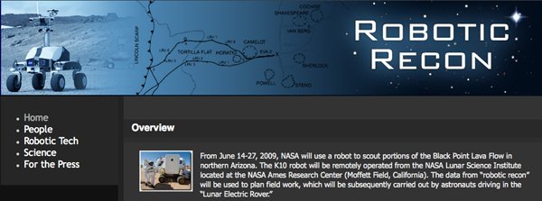
06.12.2009 06:34
LRIT data to help with AMVER vessel assistance?
Vessel Search And Rescue - Should LRIT Replace Amver?
For waters around countries running a rescue operations, this kind of thing is possible. But for high seas, the current legal restrictions around AMVER are likely to make this kind of thing difficult. A country is allowed to receive the positions from vessels with its flag and any vessel within 1000 (km, nautical miles, m ?) of its shores. This will make the system less useful than it could be.
Also, if any country is willing to share its LRIT data with me, please contact me. I don't mind if the data is delayed. It's a shame that there isn't a clause in the rules that allow full release of the position data with a delay (say 6 months or a year).
For waters around countries running a rescue operations, this kind of thing is possible. But for high seas, the current legal restrictions around AMVER are likely to make this kind of thing difficult. A country is allowed to receive the positions from vessels with its flag and any vessel within 1000 (km, nautical miles, m ?) of its shores. This will make the system less useful than it could be.
Also, if any country is willing to share its LRIT data with me, please contact me. I don't mind if the data is delayed. It's a shame that there isn't a clause in the rules that allow full release of the position data with a delay (say 6 months or a year).
06.11.2009 14:45
JPL Planetary Photojournal gets RSS feeds
A while back, I sent in a suggestion
to the JPL Planetary
Photojournal for RSS feeds. I got a nice note from Karen B.
today that they've got feeds!
RSS Feeds
RSS Feeds
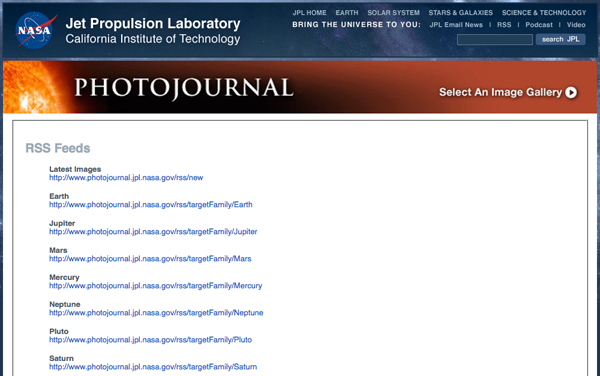
06.11.2009 14:38
summer
A photo from my mom that makes me
think of that moment of summer just before fall comes.
06.10.2009 23:46
regex for tide data
I spent some time with tide data
today that came from two separate sensors spliced together into one
serial stream. I again used regular expressions to pull them apart.
Here are two reports together: water level and a Seabird
conductivity/temp sensor.
Trey offers up a better way to do this if you only need to pass over the data once:
Date/Time: 9.06.09 15:04:08 00 Battery Voltage 10.2 Volt 01 Reference 76 77 02 Water level 2.46 m 03 Water temperature 7.84 Deg.C 04 Pressure 11.74 kPa # 12.5633, 3.60414, 09 Jun 2009, 15:10:47Here is parsing them in python:
import re
aanderraa_date_regex_str = r'''Date/Time:\s+(?P<datetime>\d{1,2}.\d{1,2}.\d{1,2}\s+\d{1,2}:\d{1,2}:\d{1,2})'''
aanderraa_battery_regex_str = r'''(?P<entry_num>\d\d)\s+Battery\s+Voltage\s+(?P<voltage>\d+(\.\d*)?)\s+(?P<units>Volt)'''
aanderraa_reference_regex_str = r'''(?P<entry_num>\d\d)\s+Reference\s+(?P<r1>\d+)\s+(?P<r2>\d+)'''
aanderraa_waterlevel_regex_str = r'''(?P<entry_num>\d\d)\s+Water\s+level\s+(?P<water_level>\d*(\.\d*))\s+(?P<units>[a-z]+)'''
aanderraa_watertemp_regex_str = r'''(?P<entry_num>\d\d)\s+Water\s+temperature\s+(?P<water_temp>\d*(\.\d*))\s+(?P<units>[.A-Za-z]+)'''
aanderraa_waterpressure_regex_str = r'''(?P<entry_num>\d\d)\s+Pressure\s+(?P<water_pressure>\d*(\.\d*))\s+(?P<units>[.A-Za-z]+)'''
seabird_ct_date_strptime = '%d %b %Y, %H:%M:%S'
seabird_ct_regex_str = r'''\#\s+
(?P<temp_c>\d+(\.\d*)?),\s+
(?P<conducitivity_sm>\d+(\.\d*)?),\s+
(?P<datetime>\d{1,2}\s+\w+\s+\d{2,4},\s+ \d{1,2}:\d{1,2}:\d{1,2})'''
regex_dict = {
'aand_date':re.compile(aanderraa_date_regex_str, re.VERBOSE),
'aand_bat':re.compile(aanderraa_battery_regex_str, re.VERBOSE),
'aand_ref':re.compile(aanderraa_reference_regex_str, re.VERBOSE),
'aand_lvl':re.compile(aanderraa_waterlevel_regex_str, re.VERBOSE),
'aand_tmp':re.compile(aanderraa_watertemp_regex_str, re.VERBOSE),
'aand_prs':re.compile(aanderraa_waterpressure_regex_str, re.VERBOSE),
'seabird_ct':re.compile(seabird_ct_regex_str, re.VERBOSE),
}
matches = []
for key in regex_dict:
match = regex_dict[key].search(line)
if match is not None:
break
if match is None:
continue
match = match.groupdict()
matches.append((key,match))
I wish all sensor systems like this that have a component at the
surface would include a GPS or CDMA chip and the option to get time
from it. You can see here that the sensors differ by more than 6
minutes in their sense of time.Trey offers up a better way to do this if you only need to pass over the data once:
# ifilter is lazy -- returns iterator
regexesMatchingLine = itertools.ifilter(lambda key, regex: regex.search(line),
regex_dict.iteritems())
# next() gets first match, raises StopIteration if none.
key, regex = regexesMatchingLine.next()
matchDict = regex.search(line).groupdict()
06.09.2009 16:59
An unusual location for an AIS basestation
While waiting for other tasks to
finish on my computers, I decided to play around with AIS
basestation reports. Basestations periodically broadcast their
location and a timestamp. I wrote a little script to step through
the basestation reports and give me an average location for each.
Lots of these are mounted in all the usual type places, but this
one caught my eye... on top of an aircraft carrier - actually it
looks like a museum. It fits the bill and it reasonably high off of
the ground.
In the US, only the USCG is allowed to operate basestations.
In the US, only the USCG is allowed to operate basestations.
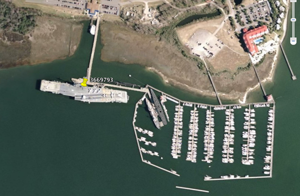
06.09.2009 09:28
Global air traffic
Thanks to Mike Thompson and Capt. Bob
for this link:
animated 24-hour map of world air traffic [flickeringpictures]
animated 24-hour map of world air traffic [flickeringpictures]
Air Traffic Worldwide 24HR from kouko a on Vimeo.
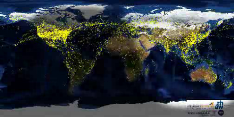
06.08.2009 18:40
iPhone with Compass
As Peter Selkin says... the iPhone
has a magnetometer (a.k.a. a compass)!!! This is huge news for some
of us. Now if I can just find some details... can I make a iphone
bruton? Can I get field strength and use it to calibrate a
magneticly shielded room or the likely rate of remagnetization of
samples after they have been demagnetized? Can I find the wiring in
my walls?
Can I use my iPhone as a single beam echo sounder?
Can I use my iPhone as a single beam echo sounder?
06.08.2009 15:57
CentOS with more packages
With the help of our IT team, I now
have CentOS running with more packages available. I realize now
that we should have skipped CentOS and gone with Fedora. At this
point, I think we are going to just stick with CentOS with this
addition:
Red Hat Enterprise Linux / CentOS Linux Enable EPEL (Extra Packages
for Enterprise Linux) Repository
http://download.fedora.redhat.com/pub/epel/5/x86_64/
http://download.fedora.redhat.com/pub/epel/5/x86_64/
% sudo rpm -Uvh http://download.fedora.redhat.com/pub/epel/5/x86_64/epel-release-5-3.noarch.rpm % sudo yum update % sudo yum clean allNow when I list what I've got available, there is a lot more:
% yum repolist Loaded plugins: fastestmirror Loading mirror speeds from cached hostfile * base: centos.cogentcloud.com * updates: mirror.skiplink.com * addons: mirror.trouble-free.net * extras: mirror.unl.edu repo id repo name status addons CentOS-5 - Addons enabled : 0 base CentOS-5 - Base enabled : 3,272 epel Extra Packages for Enterprise Linux 5 - enabled : 4,971 extras CentOS-5 - Extras enabled : 277 spin-development spin-development Packages - x86_64 enabled : 9 updates CentOS-5 - Updates enabled : 337And now I've got ipython and pysqlite2...
% yum list | grep python | wc -l 210 % sudo yum -y install ipython python-sqlite2Definitely better than what I had before. I still am wishing for official python 2.5 and/or 2.6.
06.08.2009 14:18
The GeoCoastPilot as a hand held...
We have been talking in the VisLab a
lot about this kind of device, but just haven't had the time to go
implement it. The idea is to be able to hold up your mobile
computer/phone and have it identify features in your field of view.
Someone beat us to the idea... on the Google Android phone.
Hopefully the next iphone will have a compass.
Mobilizy Smartphone Solutions
Link from: The New iPhone Is a Pointing Device For The Real World: The Ground Will Speak. [News-Wyrdy] And the original link was from slashdot... Using the iPhone As a Pointing Device For the Real World
Mobilizy Smartphone Solutions
Link from: The New iPhone Is a Pointing Device For The Real World: The Ground Will Speak. [News-Wyrdy] And the original link was from slashdot... Using the iPhone As a Pointing Device For the Real World
06.08.2009 13:52
Emacs as an operating system
Emacs is an all encompassing beast.
It reads new, handles email, plays tetris, handles gdb/pdb, etc. I
guess I should of known considering that I sat in on a class in
1995 that used emacs for image processing, but I accidentally
opened an image in emacs and was surprised to see the picture right
there...
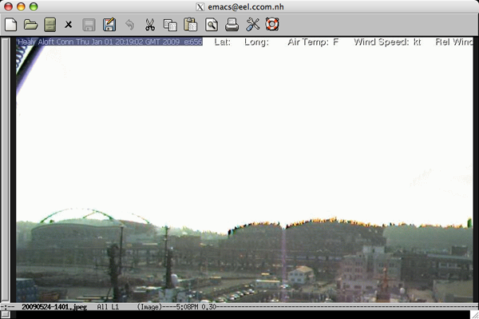
06.08.2009 13:21
windows xp - starting cron under cygwin
We've got a windows xp machine doing
datalogging. It's behind a firewall, so it has to push data out. I
wrote installed cygwin, created a rsync script and added an entry
to cron. I then sat back to watch the data come in. Nothing
happened... I didn't know that if you install cron, you have to go
and enable it:
How do I get crontab started when using cygwin [devdaily]
How do I get crontab started when using cygwin [devdaily]
$ cygrunsrv -I cron -p /usr/sbin/cron -a -D $ net start cronI'm not seeing anything in /var/log/cron.log, but I appear to be getting my data now.
06.08.2009 09:12
CCOM talk today at 10:30 AM
We have a talk today in just over an
hour... note the unusual time and location.
CCOM / JHC Seminar Series Monday, June 8th, 2009 10:30 AM Chase Ocean Engineering Lab, Room S206 Jonathan Beaudoin, Ph.D. Ocean Mapping Group, University of New Brunswick, Fredericton, NB, Canada Uncertainty Wedge Analysis: Quantifying the Impact of Sparse Sound Speed Profiling Regimes on Sounding Uncertainty Recent advances in real-time monitoring of uncertainty due to refraction have demonstrated the power of estimating and visualizing uncertainty over the entire potential sounding space. This representation format, referred to as an uncertainty wedge, can be used to help solve difficult survey planning problems regarding the spatio-temporal variability of the watercolumn. Though initially developed to work inline with underway watercolumn sampling hardware (e.g. moving vessel profilers), uncertainty wedge analysis techniques are extensible to investigate problems associated with low-density watercolumn sampling in which only a few sound speed casts are gathered per day. As uncertainty wedge analysis techniques require no sounding data, the overhead of post-processing soundings is circumvented in the situation when one needs to quickly ascertain the impact of a particular sampling regime. In keeping with the spirit of the underlying real-time monitoring tools, a "just in time" analysis of sound speed casts can help the field operator assess the effects of watercolumn variability during acquisition and objectively seek a watercolumn sampling regime which would balance the opposing goals of maximizing survey efficiency and maintaining reasonable sounding accuracy. In this work, we investigate the particular problem of estimating the uncertainty that would be associated with a particular low-density sound speed sampling regime. A pre-analysis technique is proposed in which a high-density set of sound speed profiles provides a baseline against which various low-density sampling regimes can be tested, the end goal being to ascertain the penalty in sounding confidence that would be associated with a particular low-density sampling regime. In other words, by knowing too much about the watercolumn, one can objectively quantify the impact of not knowing enough. In addition to the goal-seeking field application outlined earlier, this allows for more confident attribution of uncertainty to soundings, a marked improvement over current approaches to refraction uncertainty estimation. All Are Welcome to Attend
06.08.2009 07:00
World Oceans Day
Today is the first World
Oceans Day.
For the day, Google has a blog post - Why we need to see the sea and a page of featured visualizations - worldoceansday.appspot.com
For the event, I'm releasing the USCGC Healy ice breaker science visualization. The visualization tries to show off the hard work being done by Dale Chayes and his hard working gang of folks from LDEO that keep the science systems working on board the ship.
The visualization has a science summary for every hour from 28-Apr-2009 to 23-May-2009 (when the Healy shut down the science computers).
2009-AprMay-healy-science-reports.kmz [60 KB]
For the day, Google has a blog post - Why we need to see the sea and a page of featured visualizations - worldoceansday.appspot.com
For the event, I'm releasing the USCGC Healy ice breaker science visualization. The visualization tries to show off the hard work being done by Dale Chayes and his hard working gang of folks from LDEO that keep the science systems working on board the ship.
The visualization has a science summary for every hour from 28-Apr-2009 to 23-May-2009 (when the Healy shut down the science computers).
2009-AprMay-healy-science-reports.kmz [60 KB]
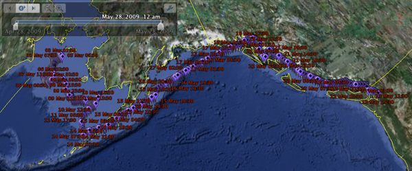
06.07.2009 21:42
CentOS 5.3 review
I'm giving CentOS 5.3 a go and so
far, it feels like I'm back in the land of RedHat that I left many
years ago. Perhaps I'm just approaching things from the wrong point
of view. My first problem I ran into was not CentOS's fault. This
is an 8-way 64-bit system:
Next came issues that do belong to CentOS. First I ran into not having lxml for python. Turns out that it isn't available from CentOS, so I had to do this, which makes me nervious:
Mac w/ fink:
"yum provides" really isn't very helpful. "yum list | grep python" is better. I really like Ubuntu, where if I try a command and it's not installed, the system recommends the package that provides that commmand.
If someone can clue me into a land of better python support for CentOS, please let me know!
Linux somehost 2.6.18-128.1.6.el5 #1 SMP Wed Apr 1 09:10:25 EDT 2009 x86_64 x86_64 x86_64 GNU/LinuxI tried running some C++ code, but it failed totally - turned out to be none 64-bit clean code. That's our own problem.
Next came issues that do belong to CentOS. First I ran into not having lxml for python. Turns out that it isn't available from CentOS, so I had to do this, which makes me nervious:
rpm -Uvh http://www.renditionsoftware.com/products/spin/development/centos/5/i386/spin-development-1-1.el5.noarch.rpmThen I could do
sudo yum install python-lxmlI figure that I can live with python 2.4.x at this point, but I turn out to be wrong. I next need pysqlite2 to create a database. I really don't want to use the pysqlite1 that is provided by CentOS 5.3. I tried grabbing a srpm from rpmfind (not what I wanted to do), and figured that might work, but that fails its internal md5 sum check. I hoped over to #centos on IRC to ask and it turns out that python 2.5.x or newer is not supported. At this point, it looks like I've got some serious custom install work to use my 2 year old code. Also missing are psycopg2 for postgres access, scipy, etc. Fink has 240 python 2.5 packages (I ahve about 40 of those installed) and Ubuntu has 150, while CentoOS has 52 (and they are all back in python 2.4.x).
Mac w/ fink:
fink list py25 | wc -lCentOS 5.3 w/ spin:
yum list | grep python | grep 64 | grep -v devel | wc -lUbuntu:
dpkg -S python | cut -d: -f1 | sort -u | wc -lPython support on CentOS is definitely rating a "poor".
"yum provides" really isn't very helpful. "yum list | grep python" is better. I really like Ubuntu, where if I try a command and it's not installed, the system recommends the package that provides that commmand.
If someone can clue me into a land of better python support for CentOS, please let me know!
06.06.2009 08:51
Wireshark and RTK GPS broadcasting GGK
This week was my first time really
using wireshark. I've used tcpdump forever, but wireshark is a
really great tool when you can run a graphical application. Here is
the screen showing a UDP broadcast of the RTK GPS position of one
of the two buoys on Mendum's Pond. This message will drive the AIS
zone message that will announce the buoy's position to vessels in
the area.
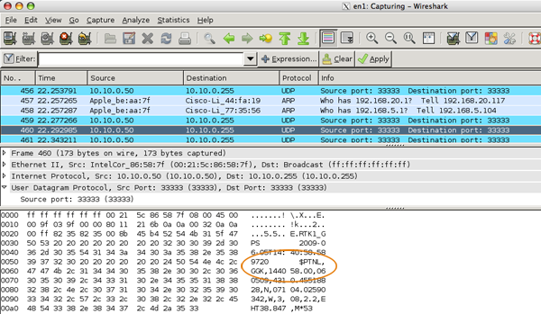
06.06.2009 08:30
Gavia at Mendums Pond - day 3 in the field
Friday was the final day of field
operations.
The buoys are being deployed in the top left of the image while the team prepairs to lauch gavia.
After a number of missions, the gavia needs a recharge of her batteries...
And just as we were finishing up, Hydro International announced two orders of Gavia AUV's: First Gavias AUVs for Oil and Gas
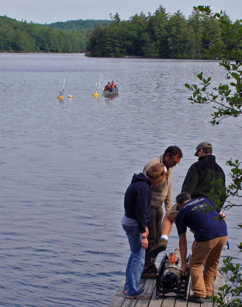
The buoys are being deployed in the top left of the image while the team prepairs to lauch gavia.
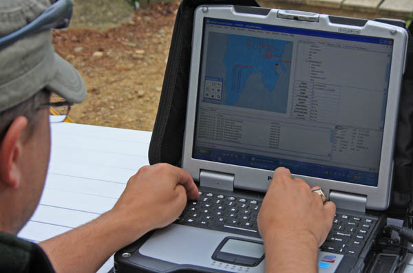
After a number of missions, the gavia needs a recharge of her batteries...
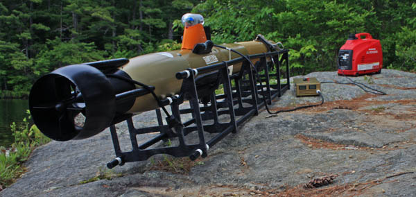
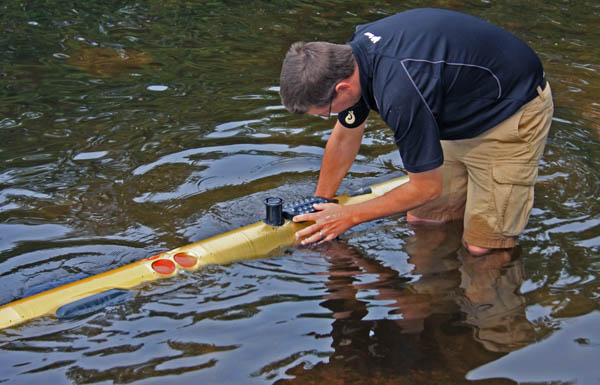
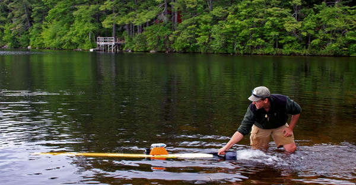
And just as we were finishing up, Hydro International announced two orders of Gavia AUV's: First Gavias AUVs for Oil and Gas
An order has recently been placed by NCS Survey for two Gavia AUVs with a capital expenditure of GBP1.5m - one 500m-rated system and one 1,000m rated system. These systems are specifically aimed at the shallow water market and are understood to be the first Gavia AUVs to enter the Oil & Gas market as a service provided by a survey contractor.
06.03.2009 17:45
VideoRay ROV at Mendum's Pond
Today, the group broke out the
VideoRay ROV. It has front and rear cameras, 3 thrusters, a
compass, depth sensor, and a gripper. For it's size, it's really
fast. Most of the team got a chance to drive the vehicle.
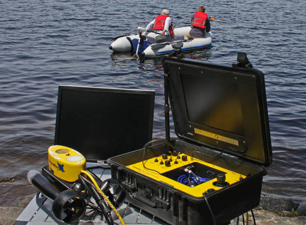
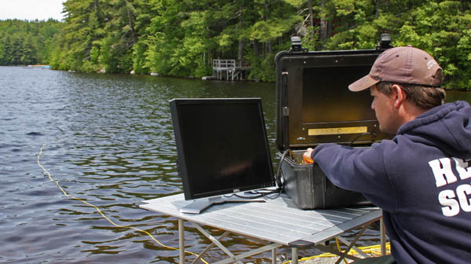
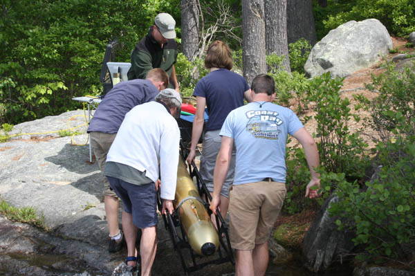
06.03.2009 13:16
Mendum's pond second day
Another day at Mendum's Pond.
The RTK basestation:
Deep discussions:
The team planning the first run of the day with the GeoSwath:
The team:
Starting a mission:
The vehicles and platforms...
Retrieving gavia:
A buoy being moved shown in Google Earth:
Yesterday's tank testing:
The RTK basestation:
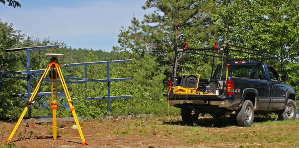
Deep discussions:
The team planning the first run of the day with the GeoSwath:
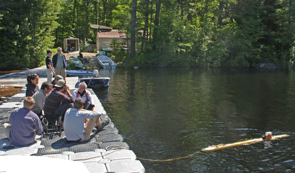
The team:
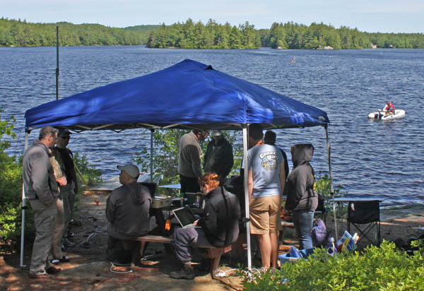
Starting a mission:
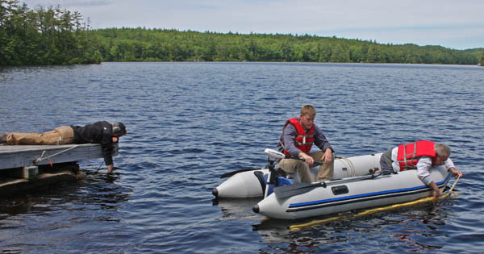
The vehicles and platforms...
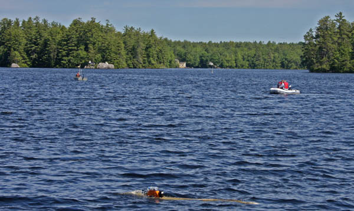
Retrieving gavia:
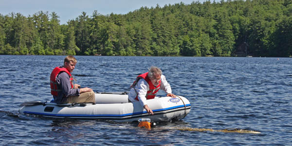
A buoy being moved shown in Google Earth:
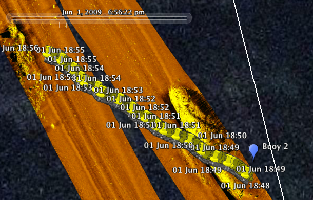
Yesterday's tank testing:
06.02.2009 11:07
GPS-Acoustic buoys in Mendum's Pond
Another blog post from the team:
AUV Bootcamp at CCOM [Val's Brain Log]. And Art has posted more
pictures:
Mendums Pond Day One Highlights
Tom and John putting the buoys into the water:
Transporting the buoys to their positions:
The buoy deployed in the middle of the lake:
Tom and John putting the buoys into the water:
Transporting the buoys to their positions:
The buoy deployed in the middle of the lake:
06.01.2009 14:44
Sidescan in mendums pond
Art has been blogging today too...
First Mendums Pond Mission!
The group just ran gavia for the first time with side scan running. This is a Marine Sonic Technology (MST) 900/1800 kHz sonar running in 900 kHz mode.
The swath width is about 60 meters.
The group just ran gavia for the first time with side scan running. This is a Marine Sonic Technology (MST) 900/1800 kHz sonar running in 900 kHz mode.
The swath width is about 60 meters.
06.01.2009 12:21
Mendums pond shoreline
We needed a shoreline CSV file of
Mendums Pond, so I made a quick one from Google Earth by adding
polygons and pulled the coordinates out of the kml... I check the
georeferencing with a GPS coordinate at the end of the pier and it
matched within 10 meters or so (not being overly careful)... the
georeferencing here is probably good to 5 meters.
Mendums-Pond-bounds-20090601.kmz
Mendums-Pond-bounds-20090601.kmz